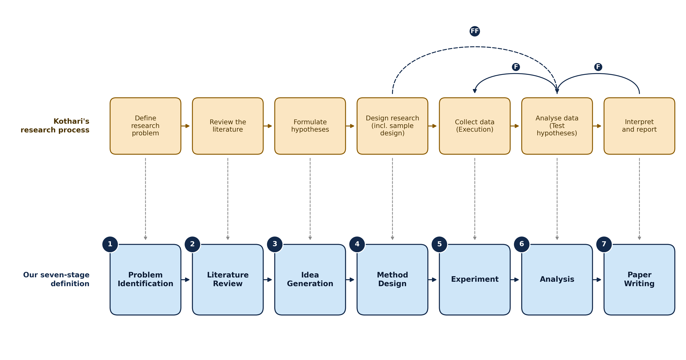

Existing systems use "end-to-end" inconsistently. Some do not run experiments, some stop short of writing a paper, and some do not generate ideas themselves. Rather than add another tool-specific definition, we adopt Kothari's discipline-agnostic model of the research process and require a tool to automate all of its stages.

| # | Stage | What the tool must do on its own |
|---|---|---|
| 1 | Problem Identification | Define the research problem |
| 2 | Literature Review | Review relevant concepts, theories and prior findings |
| 3 | Idea Generation | Formulate hypotheses |
| 4 | Method Design | Design the research, including sample and experimental design |
| 5 | Experiment | Collect data by executing the designed study |
| 6 | Analysis | Analyse the data and test the hypotheses |
| 7 | Paper Writing | Interpret results and report findings |
Definition 1. An AI Scientist tool is end-to-end if and only if it autonomously executes all seven stages within a single system. A tool that automates only a strict subset of these stages is partial or stage-specific automation.
How stage coverage was judged
For each candidate we inspected source code, technical report and documentation, and labelled every stage:
- Autonomous: executed by the tool without human input
- Partial: supported, but needs human-supplied material such as a code template
- Absent: no corresponding component
The full matrix is on the Tool selection page.